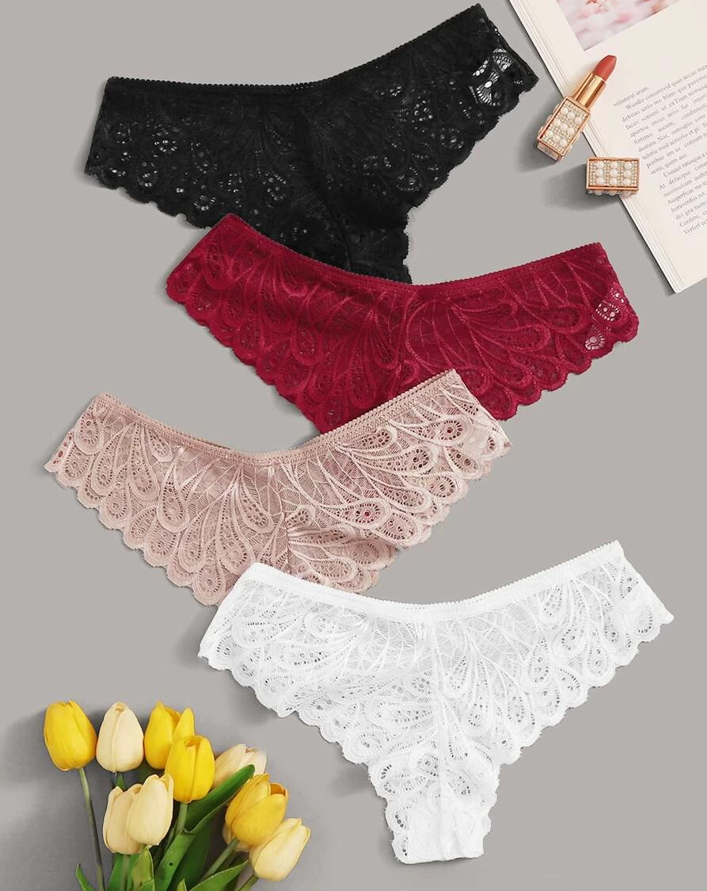

Описание товара
Слипы с передней частью из шелка и задней из кружева. Ластовица: 100% хлопок.
Характеристики товара
Кружево: 82 % Полиамид, 18 % Эластан
Основная ткань: 95 % Шелк, 5 % Эластан
Ткань: 95 % Шелк, 5 % Эластанк
Клапан кармана: 100 % Хлопок
Машинная стирка при температуре не более 30 °C в особо деликатном режиме.
Подробное описание товара
Идеальное нижнее белье, которое практически не ощущается на теле и подчеркивает твои достоинства!